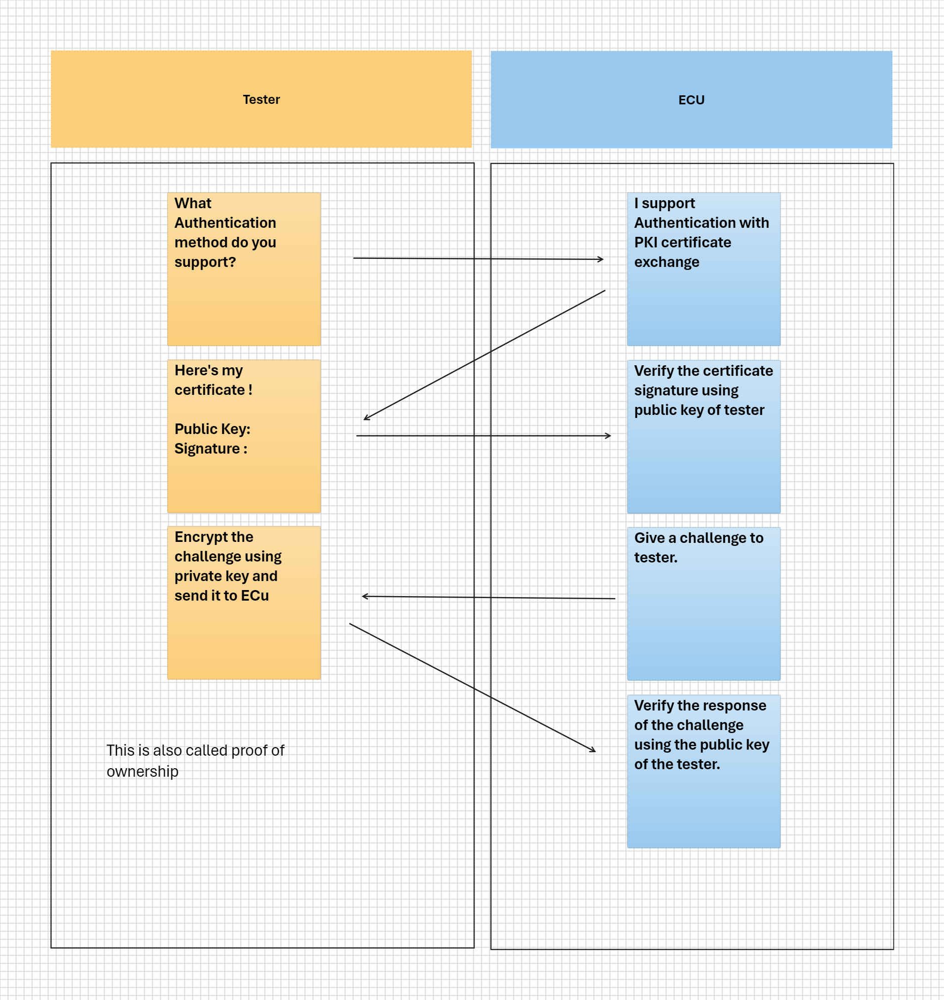

Certificate Based Authentication
Unified Diagnostic Service (UDS) : Service 0x29
Used for diagnostic tester authentication.
Split in to two different sections Authentication with PKI Certificate Exchange (APCE) and Authentication with Challenge-Response
Uses Asymmetric cryptography
Security Access : UDS Service0x27
Uses symmetric cryptography
PKI (Public Key Infrastructure)
PKI is an asymmetrical cryptographic system which uses a pir of mathematically related keys to send and receive message in a secure way. A message encrypted with private key can only be decrypted using public key and Vice versa is also feasible.
Digital Certificates
Digital certificates utilize the public key infrastructure (PKI). A PKI system has two main components: a certificate authority (CA) and certificates. These certificates will be used to exchange the public keys.
The digital certificates used for security reasons and many use cases:
- Secure over-the-air updates (OTA) and code signing.
- Transport Layer Security (TLS).
- Secure diagnostics and service 0x29.
- Vehicle to Grid (V2G) technology.
- Vehicle to everything (V2V) technology.
- Vehicle to everything (V2X) technology.
Certificate consist of 3 main sections
-
certificate data
-
Algorithm used for signature.
-
Signature.
ECU Authentication with PKI Certificate Exchange

Proof of ownership
When an ECU receives the certificate, it doesn't know if the tester owns the private key. So it sends challenge to the tester to encrypt it using the testers private key. ECU verifies the received response using testers public key, hence verifying the ownership.
Proof of ownership can be bidirectional if needed to protect the tester form ECU (Some systems use this kind of proof of ownership). In this case the certificate sent by the tester consists of public key, signature and a challenge to the ECU. ECU verifies the sends its certificate to the tester with public key, signature and response to the challenge
Creating a certificate chain of trust using OpenSSL
In most ECUs that contain certificates, the certificates are organized in a hierarchical structure known as a certificate chain. The chain starts with the root CA certificate, which is self-signed and acts as the trust anchor for the complete chain. One or multiple Intermediate CAs certificates can follow the root CA certificate. The Intermediate CAs certificates are then used to sign and issue end entity certificates.

Create RootCA
Openssl needs to be installed. openssl.cnf can be found in the installed folders.
openssl genrsa -out CA_KeyFile.pem 2048 # generate private key
openssl req -new -x509 -days 365 -sha256 -key CA_KeyFile.pem -config openssl.cnf -out CA_Certificate.crt
openssl x509 -in CA_Certificate.crt -text -noout # check certificate content
Create intermediate certificate
openssl genrsa -out Inter_KeyFile.pem 2048 # generate private key
# generate CSR consisting of public key of Intermediate certificate.
openssl req -new -sha256 -key Inter_KeyFile.pem -config openssl.cnf -out Inter_CSR_Certificate.csr
# Using the csr generate the certificate
openssl x509 -days 365 -req -in Inter_CSR_Certificate.csr -CA CA_Certificate.crt -CAkey CA_KeyFile.pem -CAcreateserial -out Inter_Certificate.crt
Create end user certificate
openssl genrsa -out User_KeyFile.pem 2048 # generate private key
# generate csr consisting of public key
openssl req -new -sha256 -key User_KeyFile.pem -config openssl.cnf -out User_CSR_Certificate.csr
openssl x509 -days 365 -req -in User_CSR_Certificate.csr -CA Inter_Certificate.crt -CAkey Inter_KeyFile.pem -CAcreateserial -out User_Certificate.crt